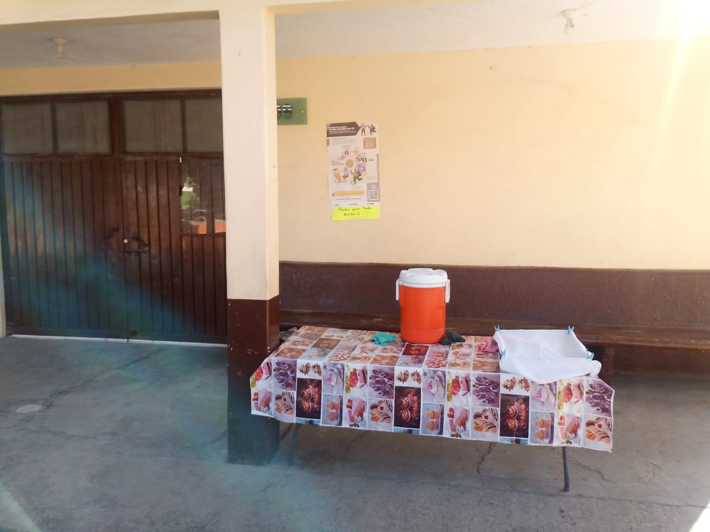

Zapotiltic jalisco mexico en el rincón en las cuatro esquinas en la casa ejidadal HORARIO: lunes a sabado de 6:00am a 11:00am
telefono:341-176-18-24
panadería el rincón es un negocio familiar de Zapotiltic Jalisco .elaboramos pan artesanal con recetas tradicionles,ingredientes frescos y mucho cariño
